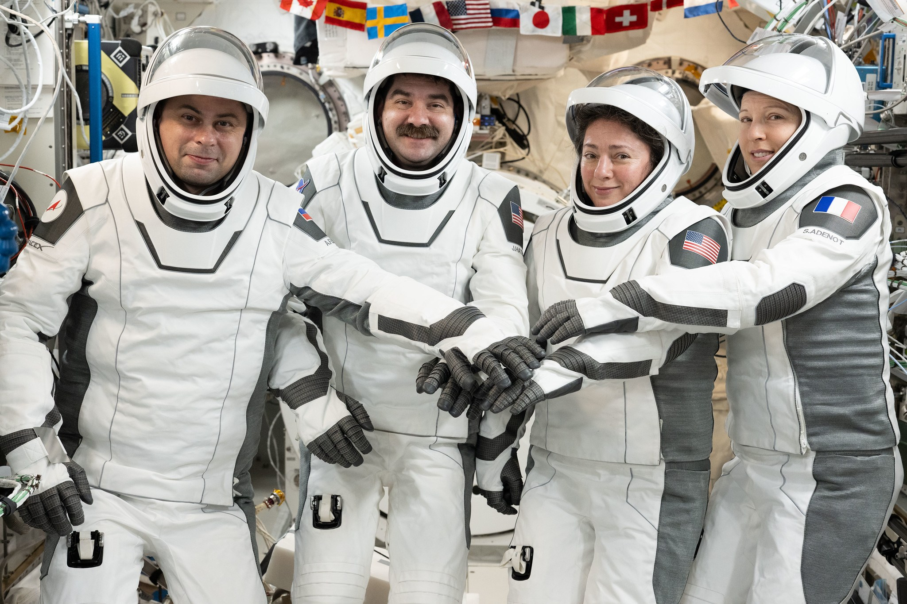
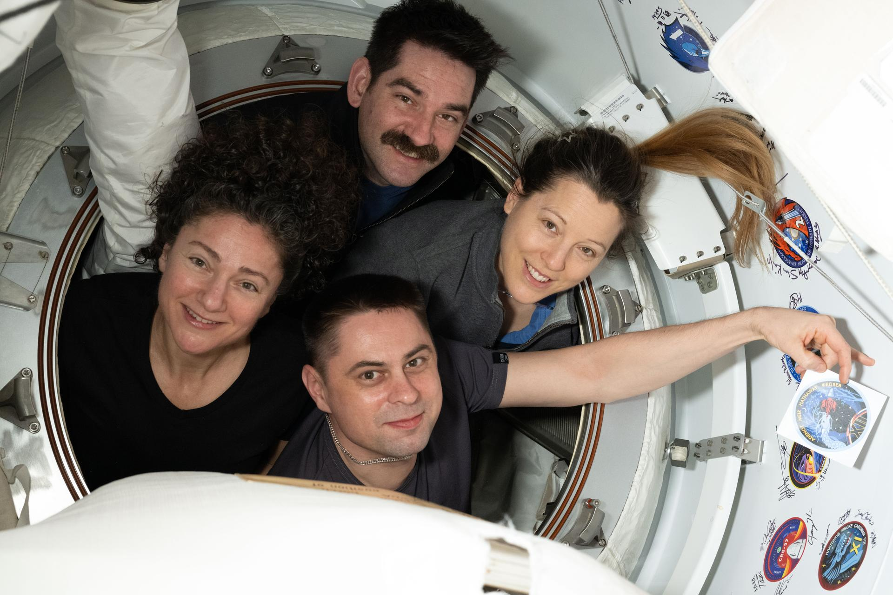

Per Crew-12 è il momento di lasciare la Stazione Spaziale Internazionale. Jessica Meir, Jack Hathaway, Sophie Adenot e Andrey Fedyaev stanno concludendo una permanenza che, con il programma attuale, porterà la missione a 237 giorni nello spazio. La partenza imminente è quella dalla ISS: il lancio dalla Florida risale al 13 febbraio. Ora la destinazione è la Terra, con un ammaraggio nel Pacifico al largo della California.
Quando parte e quando arriva
Il distacco è programmato non prima delle 08:05 EDT di mercoledì 7 ottobre, equivalenti alle 12:05 UTC e alle 14:05 CEST in Italia. Dragon lascerà il boccaporto rivolto verso lo spazio del modulo Harmony. Non seguirà un rientro immediato: il profilo prevede poco più di un giorno di volo autonomo prima dell’arrivo nella zona di recupero.
La manovra di uscita dall’orbita è prevista giovedì 8 ottobre alle 16:46 italiane; l’ammaraggio alle 17:34, cioè le 15:34 UTC e le 08:34 locali in California. L’intervallo pianificato fra distacco e arrivo è di 27 ore e 29 minuti. Sono orari operativi soggetti a variazione, non appuntamenti garantiti. Il programma aggiornato sostituisce quello precedente che indicava una partenza alle 01:05 EDT: usare quell’annuncio più vecchio significherebbe anticipare erroneamente il distacco di sette ore.
| Data | Ora | Evento |
|---|---|---|
| 7 ottobre | 12:00 | Inizio diretta per la chiusura del portello |
| 7 ottobre | 12:20 | Chiusura del portello prevista |
| 7 ottobre | 13:45 | Inizio diretta del distacco |
| 7 ottobre | 14:05 | Undocking previsto, non prima di questo orario |
| 8 ottobre | 16:20 | Inizio diretta del rientro |
| 8 ottobre | 16:46 | Deorbit burn previsto |
| 8 ottobre | 17:34 | Ammaraggio previsto nel Pacifico |
Chi torna sulla Dragon
La comandante di Crew-12 è Jessica Meir, astronauta NASA; il pilota è Jack Hathaway, anche lui NASA. I due specialisti di missione sono Sophie Adenot, dell’Agenzia Spaziale Europea, e Andrey Fedyaev, di Roscosmos. Quattro persone e tre agenzie condividono la stessa capsula per l’ultima fase del viaggio. I ruoli di comandante e pilota riguardano la gestione della missione e la supervisione del veicolo; non trasformano il rientro in un volo aeronautico manuale, perché Dragon dispone di sistemi automatici per la sequenza di ritorno.
Per Adenot si chiude la missione europea εpsilon, il suo primo volo spaziale. Il lavoro svolto ha incluso ricerca, attività operative e sperimentazione tecnologica. Il significato del ritorno non si esaurisce quindi nel recupero dell’equipaggio: continua attraverso le verifiche postvolo, l’analisi delle esperienze raccolte e il confronto fra le condizioni osservate in orbita e quelle misurate nuovamente a Terra.
Jessica Meir
Jack Hathaway
Sophie Adenot
Andrey Fedyaev

Dal distacco al rientro atmosferico
Dopo l’undocking, una serie di accensioni allontanerà Dragon dalla Stazione. È una fase distinta dalla manovra finale di deorbitazione: prima serve stabilire una separazione sicura dall’avamposto, poi il veicolo prosegue il proprio percorso autonomo. La partenza conclude il periodo di collegamento alla ISS, ma la missione resta in corso fino al ritorno e al recupero.
La manovra di deorbit burn modifica la traiettoria affinché la capsula rientri nell’atmosfera. Lo scudo termico protegge l’abitacolo durante la fase più calda, mentre la resistenza dell’aria riduce progressivamente la velocità. I paracadute intervengono nelle fasi successive per preparare il contatto con l’acqua. Distacco, frenata orbitale, ingresso atmosferico e ammaraggio sono dunque passaggi differenti: un buon esito della prima tappa non autorizza a dichiarare già conclusa l’intera operazione.
Perché il meteo conta anche sulla ISS
Il momento della partenza dipende anche dalle condizioni previste nel Pacifico. NASA e SpaceX valutano la prontezza della capsula, delle squadre di recupero e dell’area di ammaraggio. Un problema nella zona di arrivo può quindi cambiare un’attività che comincia centinaia di chilometri sopra la Terra. Il margine operativo serve a proteggere le persone a bordo e quelle che dovranno avvicinarsi al veicolo in mare.
Con l’ammaraggio non termina immediatamente il lavoro. Le squadre raggiungono la capsula e assistono gli astronauti nel ritorno a terraferma. Dopo una lunga permanenza in microgravità seguono valutazioni mediche e riadattamento alla gravità. Per Adenot è previsto il successivo trasferimento a Colonia, dove operano il Centro europeo astronauti e la struttura :envihab del DLR. Tempi e modalità delle attività successive dipendono anche dalle condizioni operative e mediche, senza un automatismo legato all’ora di arrivo.
La preparazione riguarda anche l’organismo degli astronauti. Prima del rientro l’equipaggio ha predisposto bevande e compresse saline per il cosiddetto fluid loading, una procedura del programma di ritorno che aiuta il corpo ad affrontare nuovamente la gravità. Non è un dettaglio folkloristico della vita in capsula: il passaggio dall’ambiente orbitale alla Terra richiede assistenza e controlli specifici. Il racconto dell’ammaraggio va quindi accompagnato da quello del recupero e delle attività postvolo.
Che cosa riporta a Terra
Dragon è stata preparata anche con effetti personali, carico e campioni scientifici. Il ritorno dell’equipaggio conclude così una parte del lavoro, ma ne apre un’altra nei laboratori terrestri. I materiali recuperati possono essere esaminati con strumenti e procedure differenti da quelli disponibili sulla Stazione. Per leggere il valore della missione non basta contare i giorni trascorsi in orbita: bisogna seguire il percorso delle attività, delle osservazioni e dei risultati fino alle analisi successive al volo. Anche per questo una capsula capace di riportare persone e materiali è un elemento della continuità fra ricerca sulla ISS e lavoro a Terra.
La ISS continua con Crew-13
Il ritorno avviene dopo l’arrivo di Crew-13, entrata nella sequenza di rotazione con lancio e attracco del 1º ottobre. Jessica Watkins, Luke Delaney, Joshua Kutryk e Sergey Teteryatnikov hanno iniziato il lavoro insieme ai residenti già presenti. Il passaggio di consegne comprende sistemi, procedure e responsabilità: mantenere questa continuità è parte del servizio, non un dettaglio accessorio fra due voli.
Il 4 ottobre Meir ha trasferito il comando della Stazione a Pyotr Dubrov. Dopo la partenza di Crew-12 resteranno sette persone sull’avamposto, impegnate nella ricerca e nella manutenzione. La breaking news dedicata al lancio di Crew-13 passa quindi nell’archivio Notizie; questa pagina mette in primo piano la fase attuale, il ritorno di Crew-12, senza confondere i due equipaggi o presentare come futuro un lancio già avvenuto.

Come seguire partenza e arrivo
La copertura del distacco comincia alle 13:45 italiane del 7 ottobre. Per il rientro, il collegamento previsto inizia alle 16:20 dell’8 ottobre. NASA trasmette sulle piattaforme indicate nella propria pagina live; ESA propone la diretta anche attraverso Web TV e YouTube. La pagina SpaceX di Crew-12 resta il riferimento del costruttore. NASASpaceflight è disponibile come copertura indipendente: il collegamento porta all’elenco delle dirette, non a una trasmissione specifica non ancora verificata. Dopo il distacco NASA prevede anche comunicazioni audio durante l’allontanamento dalla ISS.
Fonti pubbliche e tracce
Ultimo aggiornamento editoriale: 7 ottobre 2026. Orari convertiti da EDT (UTC−4) a CEST (UTC+2). Il countdown misura il tempo rispetto al programma: non è telemetria e non conferma l’esecuzione degli eventi.
- SpaceX, pagina Crew-12: riferimento richiesto dal lettore; pagina dinamica del costruttore.
- NASA, avviso M26-075, 5 ottobre: programma aggiornato, condizioni operative, copertura e prima fotografia.
- NASA, aggiornamento del 6 ottobre: 237 giorni previsti, equipaggio e permanenza di sette residenti.
- NASA, aggiornamento del 5 ottobre: Crew-13 sulla ISS, passaggio di comando e profilo del ritorno.
- ESA, Watch Sophie Adenot return to Earth, 6 ottobre: conferma 14:05 CEST e 17:34 CEST, sequenza di rientro e attività a Colonia. Una riga riassuntiva della pagina ESA riporta un refuso sul fuso dell’ammaraggio; qui si usa la tabella dettagliata, coerente con NASA e UTC.
- ESA, avviso per il ritorno in Europa: carattere provvisorio delle attività postvolo e riabilitazione.
- NASA, comunicato del lancio del 13 febbraio: inizio della missione, nomi e ruoli dell’equipaggio.
Fotografie utilizzabili
Entrambe le fotografie provengono da NASA e sono attribuite a NASA/Anil Menon nelle pagine originali. Sono utilizzate a fini informativi, con crediti e link in didascalia, nel rispetto delle indicazioni NASA per immagini e media. Non sono immagini generate né una rappresentazione dell’ammaraggio futuro. Nessuna approvazione del sito da parte di NASA è implicata.
Apri il dossier Crew-13 archiviato · Archivio Notizie · Torna a SpaceX